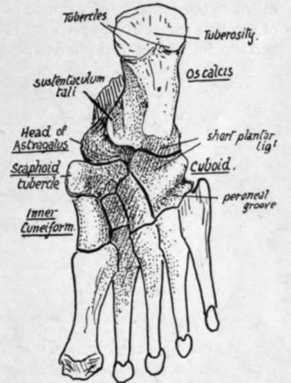
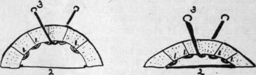

The Foot. Part 2
Description
This section is from the book "The Anatomy Of The Human Skeleton", by J. Ernest Frazer. Also available from Amazon: The anatomy of the human skeleton.
The Foot. Part 2
The sustentaculum is seen to have a broad groove on its lower aspect, and this is continuous behind with a groove on the back and inner part of the astragalus, and is for the tendon of the Flexor longus hallucis.
The head of the astragalus is visible, in front of the sustentaculum, between it and the scaphoid. The inner part of the scaphoid is prolonged downwards as the tubercle of scaphoid. In front of this the inner cuneiform is seen to have a thick and strong base, whereas the other two cuneiform bones have their broad bases uppermost and consequently do not show very well on the plantar surface; moreover, they are rather hidden in the deep concavity of the sole. The cuboid forms a prominent mass outside the cuneiforms, and has a deep groove crossing it obliquely just behind its metatarsal border ; this is for the tendon of Peroneus longus, and is therefore directed towards the proximal end of the first metatarsal, on which bone and the internal cuneiform the tendon is inserted. This groove commences in a deep notch, on the outer border, for the tendon as it comes round from the outer side of the os calcis, and here there is a facet for a fibro-cartilaginous sesamoid thickening in the tendon. A prominent ridge crosses the cuboid behind the groove, and behind the ridge is a ligamentous hollow that is immediately in front of a corresponding hollow on the os calcis and is filled by the " short plantar ligament," a mass of fibres connecting the two bones here.
Now compare the skeleton with the living foot, and endeavour to recognise some of the bony points ; these can be felt even through the boot as a rule.
On the inner side the malleolus of the tibia is, of course, recognised at once ; about three-quarters of an inch below this the sustentaculum can be felt by fairly deep pressure, and about an inch in front of this the tubercle of the scaphoid is easily found. Pass the fingers carefully along the inner side in front of this, and it is possible to distinguish the bony masses of the inner cuneiform and first metatarsal from each other.
Fig. 140.-Plantar aspect of right foot. Semidiagrammatic.
On the other side the external malleolus and the styloid prominence of the fifth metatarsal, below and in front of it, are the only points that can be found : the edge of the tarsus between these lies so deep and is so covered by soft parts that it cannot be certainly felt.
But the general level of the mid-tarsal joint can be placed on the outer side as half-way between these points, while on the inner side it lies, of course, just behind the scaphoid tubercle. This is an important joint, at which a large part of the free movements of the foot take place.
In the metatarsal region it is enough to point out at present that there is a transverse arch continuous with that of the tarsus but not so deep : attention can also be called to the presence of a couple of sesamoid bones on the plantar surface of the head of the first metatarsal, which are the largest in the body, after the patella, and which account for the marked grooves present on this surface of the articular head.
We can now examine the construction of the arches present in the foot and obtain a general idea of the mechanical factors that support them.
There is a longitudinal arch in the foot, as well as a transverse concavity, and it is convenient to deal with the former first.
If the skeleton of the foot is considered, it is evident that the bones which constitute the longitudinal arch can be divided into two groups, inner and outer, resting on a common pillar, the os calcis, at their posterior ends. The inner arch is higher, and is made by the astragalus (resting on os calcis), scaphoid, cuneiforms, and three inner metatarsals, while the outer comprises os calcis, cuboid, and two outer metatarsals. The two sets of bones are in a sense distinct, for the articulations between them permit of sliding movements only, so that one arch could be momentarily increased or lessened without affecting the other. As there is no interlocking between the arches in front of the calcaneum, each must depend on its own mechanism for support, and such mechanism will vary with the conditions of the arch.
The means used to maintain each arch can be divided into three main classes. If an arch, composed of several segments, as in Fig. 141, requires support, this can be secured in three ways : (1) The segments can be tied together oa the side of the concavity ; ties on the convex side would have no effect. (2) The supporting pillars can be tied together. (3) A strap can be run under the highest part of the arch, fastened to structures away from the arch.
Fig. 141.-To illustrate methods by which an arch composed of segments may be held up : 1, by ties between the segments in the concavity ; 2, by connecting the supporting pillars ; and 3, by the direct support of a strap passing under the highest part of the arch. In the lower arch the first two methods are much less effective and the connections must therefore be proportionately stronger, but the direct action of 3 is not lessened, though more strain must be thrown on it owing to the lessened effectiveness of the other supports.
All these varieties are represented in the supports of the longitudinal arches of the foot.
To deal first with the inner side. (1) The intersegmental ties are represented by the ligaments connecting the articulating bones, and these must therefore be strong on the concave or plantar side : no strain is thrown on them on the dorsal side. (2) Ties between the pillars are provided by the muscles and fasciae extending between the tuberosity of the os calcis and the great toe along the inner side of the foot. (3) The expansion from the tendon of Tibialis posticus to cuboid, passing under the head of the astragalus, acts as a strap under the highest part of the arch : observe (Fig. 142) that this is not the direct tendon that goes to the scaphoid, for this can give no aid in supporting the inner arch, but its expansion crosses under the arch to be attached outside it.
Continue to:
- prev: The Foot
- Table of Contents
- next: The Foot. Part 3